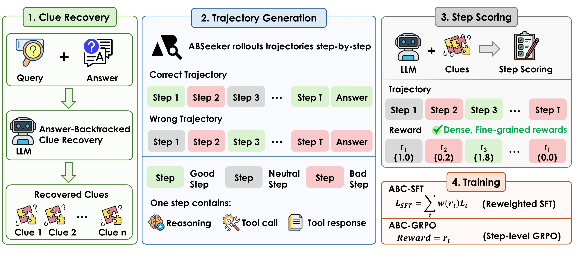
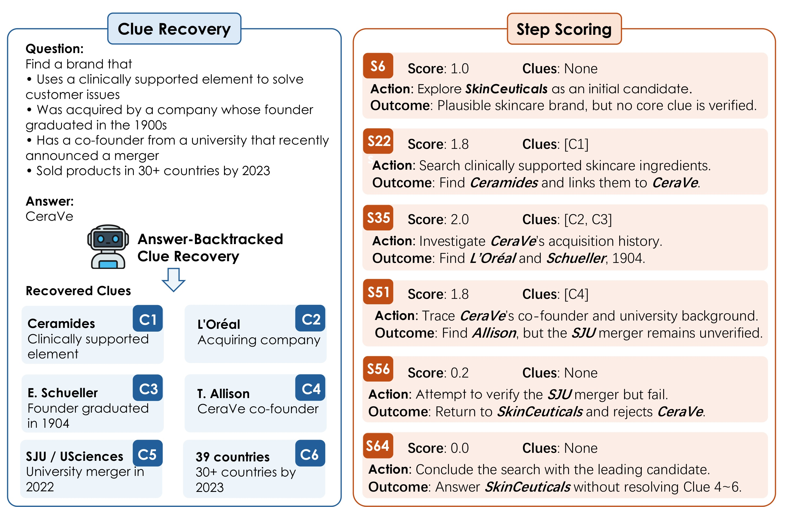
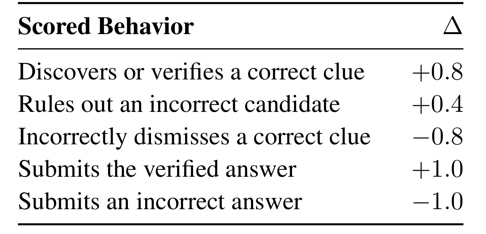
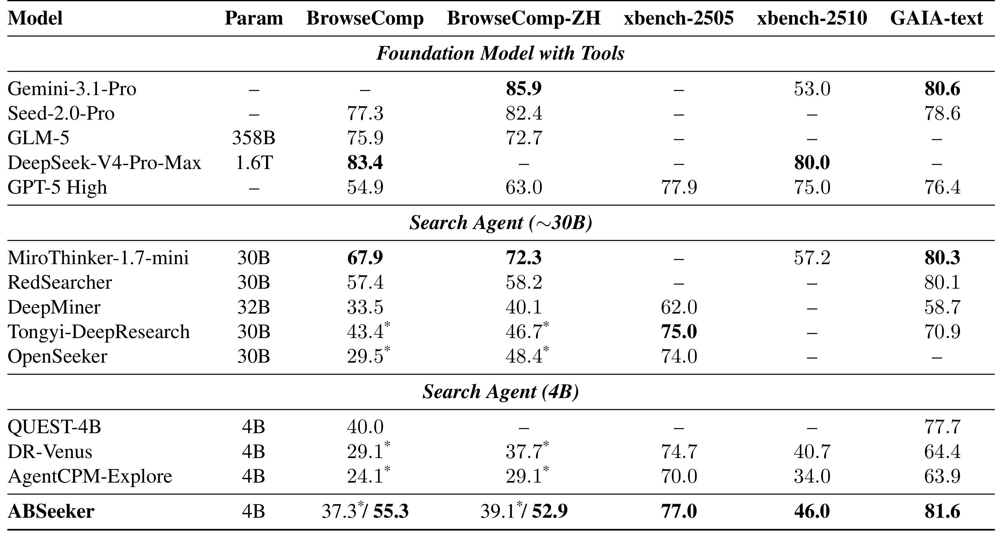
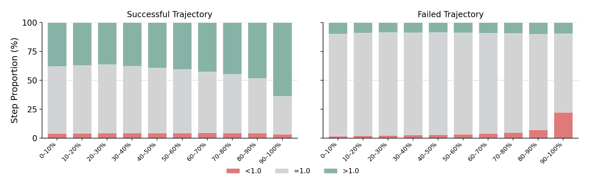
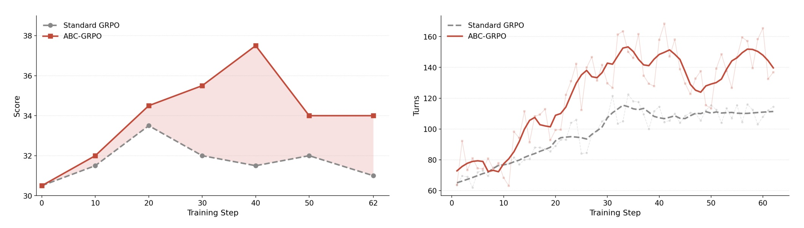
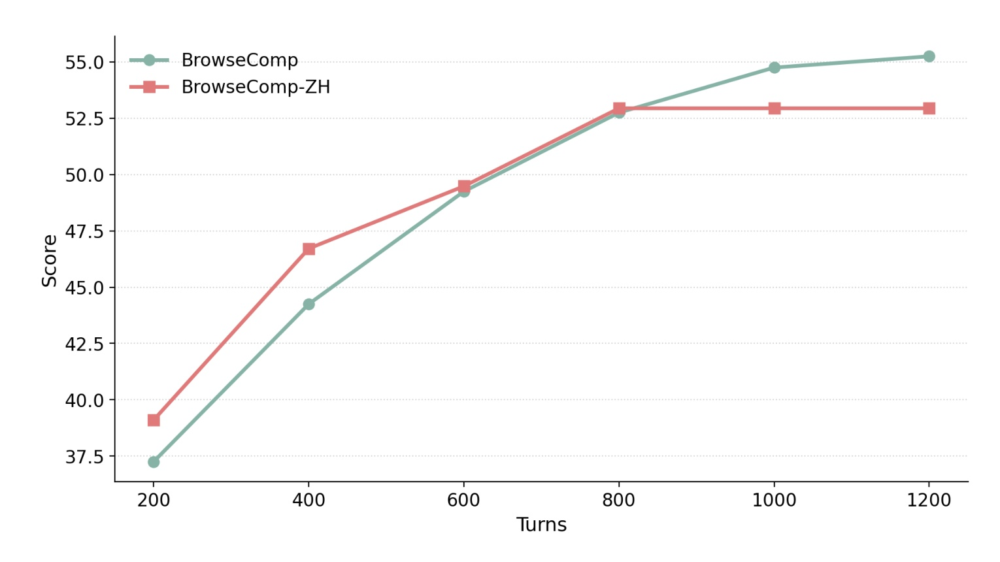
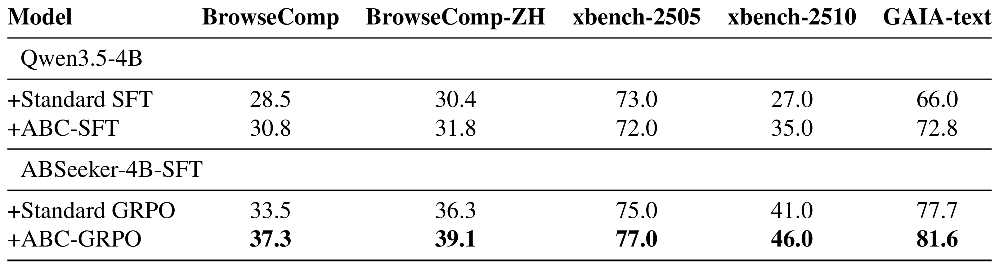

ABSeeker：以答案回溯信用分配训练长程搜索智能体
ABSeeker 的论文原题是 ABSeeker: Training Long-Horizon Search Agents via Answer-Backtracked Credit Assignment，作者为 Yijun Lu、Rui Ye、Jiajun Wang、Yuwen Du、Tian Jin、Songhua Liu 与 Siheng Chen，均来自上海交通大学。论文于 2026 年 8 月 5 日公开，主入口为 arXiv:2608.05102。作者已核验公开 代码仓库 与 ABSeeker-4B-RL 模型。这项工作的重点不是再设计一种搜索工具，而是改变长程搜索 Agent 在训练中如何给每一步分配信用：最终答对或答错不再决定整条轨迹上所有动作的命运。
长程搜索轨迹由查询、检索、阅读、验证和证据整合等异质动作组成；现有 SFT 与 RL 却常把同一轨迹内的步骤统一视为正样本或负样本，因而会奖励成功轨迹中的错误、冗余动作，也会惩罚失败轨迹中已经找到关键证据的有效动作。
1. 背景和问题
搜索 Agent 与单轮 RAG 的差别，在于它需要把一次难题拆成几十甚至上百轮决策。模型不仅要生成查询，还要判断搜索结果是否相关、访问页面、比较不同来源、修正候选、决定何时继续追索，以及何时提交最终答案。BrowseComp 一类任务尤其强调多约束与冷门事实，单个页面往往不能直接回答问题；一个前期看似合理的候选，可能在后续某个约束上被否定。训练信号若只落在最终答案，就很难告诉模型究竟是哪次检索推进了证据链，哪次跳转只是重复，哪次过早否定让轨迹偏离正确方向。
现有做法的核心缺陷是把轨迹当作不可分割的样本。SFT 通常只保留成功轨迹，或把成功轨迹上的全部模型 token 以相同权重模仿；轨迹级 RL 则根据最终答案是否匹配标准答案，为整条 rollout 提供一个结果奖励。这样做实现简单，但隐含两个相反的标签污染。第一，一条最终失败的轨迹可能已经检索到决定性实体、正确排除若干错误候选，最后却因上下文过长、证据整合失败或答案格式错误而得 0 分，前面的好动作因而没有正反馈。第二，一条最终成功的轨迹也可能绕路、重复访问、错误否定有效线索，只是后来侥幸纠正并答对；整条轨迹得 1 分会把这些动作一起强化。
这个问题在长程场景里比短链推理更严重。步骤越多，轨迹内部行为越异质，最终结果与某个局部动作质量的相关性就越弱。论文对相关路线的梳理也说明，已有细粒度信用方法各有缺口：IGPO 依据动作前后模型对标准答案的似然变化打分，信用会随策略自身信念更新而漂移；CSO 通过替代动作验证关键步骤，但只覆盖能被验证的少数决策；SAPO 与 MindDR 借助中间实体的图距离或覆盖程度，却不一定能判断一次具体搜索、阅读或推理行为是否正确。ABSeeker 要寻找的是一种对每一步都可用、相对稳定、又不依赖当前策略自我置信度的外部锚点。
论文抓住搜索任务的一个特殊条件：训练集通常给出经过验证且唯一的标准答案。正向求解时，答案未知，模型需要从问题逐步接近它；训练数据构造时答案已知，便可以反过来追问“为了证明这个答案，必须在网页中建立哪些实体、事实、关系和约束”。这些答案回溯线索不是完整轨迹，也不是自由生成的思维链，而是一组应被网页证据支持的检查点。若某一步找到了或验证了其中一条线索，它即使位于失败轨迹中也值得奖励；若某一步错误地抛弃正确线索，它即使位于成功轨迹中也应该受罚。
因此，ABC 的研究问题可以写成：给定查询、验证答案和一条可能成功也可能失败的长程搜索轨迹，能否先从答案逆向恢复证据链，再用这条证据链为轨迹每一步生成稳定、密集的监督，并把监督同时用于 SFT 与 GRPO？这里有三层挑战。线索必须可核验，否则评分器只是在用另一个模型的想象监督策略；评分必须区分“尚未找到线索的合理探索”和“已经犯错”，否则稀疏奖励只是换了形式；训练收益还必须与上下文管理收益分开，因为扩大上下文与增加交互轮数本身就会显著提高深度搜索成绩。
从大模型训练角度看，ABSeeker 是过程监督的一种可操作实现：它不要求人类逐步标注，而是利用答案可回溯性生成过程锚点。从搜索与推荐工程角度看，这个思想也很接近多阶段链路中的延迟归因：最终转化、满意度或任务完成不能直接说明召回、排序、过滤、解释等每一步是否正确，必须寻找能在中间阶段对齐的可验证信号。不过，论文验证的是公开网页搜索，不是线上推荐；能否迁移取决于目标任务是否存在可信终点，以及终点能否稳定分解成中间证据。
另一个容易被结果数字掩盖的问题是监督生成成本。ABC 不是凭空获得步骤标签：每道训练题都要由恢复模型执行反向网页调查，再由评分模型检查轨迹中的每一步。对最长 200 turn 的样本，这可能产生大量外部模型调用。论文把重点放在训练效果，没有给出构造 8.5K 轨迹全部步骤奖励所需的 token、时间和费用。因此，ABC 解决了人工逐步标注的可扩展性瓶颈，却把一部分成本转移给强教师模型与搜索环境；评价其工程价值时，必须把监督质量、生成成本和学生模型收益放在同一张账上。
2. 方法
2.1 Answer-Backtracked Clue Recovery
符号解释：式 (1) 中 $\tau$ 是完整 rollout，$s_t$ 是第 $t$ 个交互步骤，内部同时包含模型推理、工具调用和环境返回的工具响应；$T$ 是轨迹长度，$a$ 是最后提交的答案。这个定义很重要，因为 ABC 的最小信用单位不是单个 token，也不是一次完整轨迹，而是一个带上下文的 Agent 步骤。工具响应来自环境，不应该被当成策略生成内容优化，后续 ABC-SFT 与 ABC-GRPO 都只把信用分配到 policy-generated tokens。与这种可分解轨迹相对，传统答案奖励只有下面一个二值结果：
符号解释：式 (2) 中 $a^*$ 是经过验证的标准答案，$r_{\mathrm{ans}}$ 只判断最终答案是否匹配。它无法观察轨迹内部，因此同一条轨迹上的所有 $s_t$ 共享一个粗粒度结果。ABC 的核心变化，是在训练数据构造阶段把一个轨迹级二值标签展开为每一步独立的 $r_t$，而 $r_t$ 的参照物不是当前策略的自信度，而是从标准答案回溯得到的证据线索。

Figure 2 从左到右给出完整信号流。第一段只使用查询与已知答案，调用一个具备搜索和访问网页工具的 LLM，反向恢复必须成立的线索；第二段由 ABSeeker 正向生成轨迹，正确和错误轨迹全部保留，每一步含推理、工具调用与响应；第三段把轨迹步骤、原问题和线索集一并交给评分器，得到围绕 1.0 上下浮动的密集奖励；第四段才把这些奖励送入 ABC-SFT 或 ABC-GRPO。图中特意把绿色好步骤、灰色中性步骤与红色坏步骤画在成功、失败两类轨迹中，表明 ABC 不再把颜色绑定到最终成败。还要注意，这些恢复与评分模块服务于训练监督生成，并不要求部署时先知道答案；推理期仍是一个普通的工具调用搜索 Agent。回溯恢复器产出的锚点由下式定义：
符号解释：式 (3) 中 $q$ 是原始查询，$C$ 是答案回溯线索集，$c_k$ 是第 $k$ 条可验证中间证据，可以是实体、事实、属性或关系。恢复过程不是让 LLM 根据常识列一个可能的推理提纲，而是执行主动 ReAct 循环：从答案端出发检索网页、访问来源，把答案与问题中的多个约束逐一连接，并给线索找到真实网页锚点。论文利用 BrowseComp 和 BrowseComp-ZH 通常具有唯一、可验证答案的性质，把终点变成逆向取证的起点。
这一设计的优势是固定评估坐标系。同一问题的多条 rollout，无论来自哪个策略 checkpoint，都对照同一组 $C$；相比依赖策略似然变化的信用，线索不会因模型更新而同步漂移。但它也带来前置条件：标准答案必须正确且足够明确，恢复器必须真正核验来源。如果问题允许多个等价证据路径，单一回溯链可能漏掉合理的替代路线；若网页已变化或来源互相冲突，评分器也可能把正确探索误判为“不覆盖线索”。
2.2 Clue-Anchored Step Scoring
得到 $C$ 后，Clue-Anchored Step Scoring 对每个 $s_t$ 单独打分。评分器读取三类信息：当前步骤里的推理、工具调用与工具响应；原始查询 $q$；完整线索集合 $C$。它返回数值 $r_t$ 和简短理由。所有步骤从 1.0 的中性分开始，合理探索即使没有立即命中线索也不会被罚；发现或验证线索、正确排除错误候选会加分，错误否定正确线索或提交错误答案会扣分。多个行为的累积与裁剪规则如下：
符号解释：式 (4) 中 $A_t$ 是步骤 $t$ 触发的评分行为实例集合，$\Delta_j$ 是第 $j$ 个行为的分数增量，$\operatorname{clip}$ 把总分限制到 $[0,2.0]$。同一步可能同时验证多条线索，因此多个 $+0.8$ 可以累积；上限避免少数步骤形成异常大的梯度权重。基线 1.0 把“尚未证明有用但也没有明显错误”与真正的负面行为分开，比把未命中线索一律记 0 更适合开放式搜索。

Figure 3 用一个答案为 CeraVe 的多约束问题展示全流程。左侧恢复出六个锚点，包括临床支持成分 Ceramides、收购方 L'Oréal、创始人 Eugène Schueller 的毕业年份、联合创始人背景、大学合并事件与 2023 年销售国家数。右侧同一条最终答错为 SkinCeuticals 的轨迹中，S22 找到 Ceramides 并连到 CeraVe，得 1.8；S35 一次验证两条线索，累积后截到 2.0；S51 虽只完成部分约束，仍因发现正确联合创始人得 1.8；S56 抛弃已积累的 CeraVe 证据，降为 0.2；S64 提交错误答案，得 0。这个例子说明“失败轨迹”不是纯负样本，也说明评分器关注动作对证据链的贡献，而不是只看最后输出字符串。

Table 1 给出五种可累积行为。发现或验证正确线索加 0.8，正确排除错误候选加 0.4，体现“建立正证据”比一般排错权重更高；错误否定正确线索减 0.8，与发现线索的幅度对称；提交正确或错误答案分别加、减 1.0。量表没有惩罚单纯探索错误候选，只有错误地否定核心线索才扣分，这对开放搜索很关键，否则模型会因害怕试错而过早收敛。另一方面，这个规则由 DeepSeek-V4-Flash 按提示词执行，仍是模型评分而非形式化证明；“发现”与“因果必要”并不总等价，一个与答案相关但对当前问题无帮助的事实也可能获得正信用。评分提示还要求输出命中的准则编号并点名对应线索，这让训练数据可以追查某个分数的由来；但论文没有说明理由文本是否进入训练，因此可审计性主要服务于数据检查，而不是额外监督信号。
2.3 ABC-SFT
第一阶段在 8.5K 条已评分轨迹上做奖励加权监督微调，成功和失败轨迹都保留。对于步骤 $s_t$ 中第 $j$ 个由策略生成的 token $x_{t,j}$，目标函数为式 (5)：
符号解释：$\theta$ 是策略参数，$p_\theta$ 是 token 条件概率，$x_{t,<j}$ 是当前步骤中该 token 前的策略上下文，$w(r_t)$ 把步骤奖励映射为损失权重。主文用 $w(r_t)=\sigma(\alpha(r_t-\beta))$ 表示一般形式，$\alpha$ 控制曲线锐度，$\beta$ 是中性基线；附录给出的实际实现是 $w(r_t)=2\sigma(2(r_t-1))$，因此 $r_t=1$ 对应权重 1。高分步骤产生更强梯度，低分步骤不必从数据中物理删除，而是对学习贡献较小。
这种写法比只筛选成功轨迹更充分地使用数据：3.0K 失败轨迹中的有效步骤仍可训练，5.5K 成功轨迹中的低质量段落则被弱化。环境返回的网页内容被 mask，不参与语言建模损失，避免模型学习复述工具响应。附录还说明 SFT 以 Qwen3.5-4B 初始化，训练 3 个 epoch，全局 batch size 64，Adam 学习率 $5\times10^{-5}$，cosine decay、0.1 warmup、最小学习率 $10^{-6}$ 与 0.1 weight decay，并用 tensor parallel 2、context parallel 8 处理长上下文。
2.4 ABC-GRPO 与上下文管理
符号解释：第二阶段从 ABC-SFT checkpoint 开始在线 RL；式 (6) 中 $R_{i,t}$ 是第 $i$ 个 rollout 在步骤 $t$ 送入 RL 的即时奖励，$r_{i,t}$ 是同一步的 clue-anchored score。论文先在 rollout group 内对奖励归一化得到 $\widehat{R}_{i,t}$，再用式 (7) 计算折扣步骤优势：
符号解释：$T_i$ 是 rollout $i$ 的末步骤，$k$ 是从当前步向未来累积的索引，$\gamma$ 控制未来奖励向早期决策传播的衰减，附录取 $\gamma=0.25$；$A_{i,t}$ 被赋给步骤 $t$ 的全部策略 token，工具响应仍被 mask。随后沿用标准 clipped GRPO 目标，只把轨迹级 advantage 替换成步骤特定 advantage。这样，早期提出一个好查询可通过后续线索验证获得有限回报，但较小的 $\gamma$ 又避免很远的结果淹没局部评分。
RL 使用 1,000 个按交互轮数筛选的问题，其中 200 个少于 100 turn，800 个至少 100 turn；每题采样 8 条 rollout，batch size 16，每条最多 200 turn，16 个异步 agent-loop worker，temperature 1.0、top-p 0.95。奖励还包含格式惩罚，actor 学习率为 $10^{-6}$，KL 系数 0.001。ABC-GRPO 的训练信用与推理期上下文管理必须分开理解：前者改变参数更新，后者在 BrowseComp 与中文版本评测时把最大上下文设为 256K，并允许 discard-all 策略最多运行五轮。后者可以让 Agent 搜索远超训练时单段上下文的步数，却也引入额外计算与延迟。
3. 实验结果
3.1 设置：数据、五项 benchmark 与比较对象
ABSeeker 的 backbone 是 Qwen3.5-4B。SFT 数据来自 OpenSeeker 轨迹，共 8.5K 条，其中 5.5K 最终正确、3.0K 最终错误；RL 在 1,000 个问题上每题采样 8 条 rollout。线索恢复与步骤评分均使用 DeepSeek-V4-Flash，因此训练系统实际上包含学生策略和外部教师/评分模型。所有 benchmark 的 Agent 最多允许 200 次工具调用，评测运行三次后取平均。RL 动态曲线另从 BrowseComp 随机抽取 200 题，随机种子 42，同样三次平均，并由 DeepSeek-V4-Flash 根据附录提示判断最终答案是否与标准答案指向同一实体或数值。
论文称“四个 evaluation suites”，但表格有五列，因为 xbench 分成 2505 与 2510 两个版本。五项具体任务是：BrowseComp，考查英文网页上的多约束、长程信息检索；BrowseComp-ZH，在中文网络环境中测试类似能力；xbench-2505 与 xbench-2510，覆盖职业场景中的规划、推理和跨来源综合；GAIA-text，考查文本条件下的网页浏览、工具使用与多跳推断。训练问题主要是 BrowseComp 风格，因此 xbench 与 GAIA 的成绩也承担跨 benchmark 泛化证据。
baseline 分三组。第一组是带搜索工具的前沿基础模型，包括 Gemini-3.1-Pro、Seed-2.0-Pro、GLM-5、DeepSeek-V4-Pro-Max 与 GPT-5 High；第二组是约 30B 搜索 Agent，包括 MiroThinker、RedSearcher、DeepMiner、Tongyi-DeepResearch 与 OpenSeeker；第三组是 4B Agent，包括 QUEST-4B、DR-Venus 与 AgentCPM-Explore。不同系统并非每列都有报告，而且 BrowseComp 两列中星号表示未启用上下文管理，比较时不能把带管理的 ABSeeker 数字与无管理 baseline 当作完全同口径结果。
3.2 主结果：同规模优势与大模型边界

Table 2 显示，无上下文管理时 ABSeeker 在 BrowseComp 与 BrowseComp-ZH 分别为 37.3 和 39.1；启用管理后变为 55.3 和 52.9。其余三项报告 77.0、46.0、81.6。与同为 4B 的 DR-Venus 相比，无管理口径下两项 BrowseComp 分别高 8.2 和 1.4 个百分点，xbench-2505、xbench-2510、GAIA-text 分别高 2.3、5.3、17.2 个百分点；相对 AgentCPM-Explore 的五项优势为 13.2、10.0、7.0、12.0、17.7 个百分点。QUEST-4B 在 BrowseComp 的 40.0 高于 ABSeeker 无管理的 37.3，因而“4B 每项最好”依赖作者把带上下文管理的 55.3 作为主展示口径；这是阅读主张时必须保留的限定。
与约 30B 搜索 Agent 相比，ABSeeker 的 xbench-2505 为 77.0，高于表中已报告的 75.0、74.0 与 62.0；GAIA-text 的 81.6 也略高于 MiroThinker 的 80.3 和 RedSearcher 的 80.1。BrowseComp 两列则不是全面领先：MiroThinker 为 67.9/72.3，RedSearcher 为 57.4/58.2，均高于 ABSeeker 的 55.3/52.9；但 ABSeeker 明显超过多个无上下文管理的 30B 系统。与前沿基础模型的差距更大，例如 DeepSeek-V4-Pro-Max 在 BrowseComp 为 83.4，Gemini-3.1-Pro 在中文版本为 85.9。更准确的结论是：ABC 让 4B 开源搜索 Agent 在若干任务上接近或超过一部分大参数搜索 Agent，而不是普遍超过前沿模型。
3.3 奖励分布：轨迹标签为何会误伤步骤

Figure 4 把每条轨迹按相对位置切成十段，再分别统计低于 1.0、等于 1.0 与高于 1.0 的步骤比例。成功轨迹中仍约有 4% 的低质量步骤，这一比例在大多数区间都存在，说明最终答对不能保证中间路径干净；失败轨迹中近 10% 的步骤高于 1.0，前九段的绿色份额相对稳定，说明它们确实会发现或验证有用线索。失败轨迹最后 10% 的红色显著增多，与错误提交或末段放弃正确候选相符。若采用轨迹级 SFT/RL，左图红色步骤会被正强化，右图绿色步骤会被负向处理；ABC 则能把它们重新分离。
这张图支持“需要步骤级监督”的动机，但还不是评分准确率的独立验证。颜色本身来自同一个 DeepSeek-V4-Flash 评分器和同一套回溯线索，并没有人工标注的步骤质量作为金标准。因此它证明评分器确实产生了非平凡、跨轨迹成败的分布，却不能单独证明每个绿色或红色判断都正确。更强的证据应包括人工抽样一致率、不同评分模型的一致性，以及线索集漏召回时的错误分析，论文当前没有报告这些结果。
3.4 RL 训练动态：更高分，也更长

Figure 5 左侧显示，两种方法在训练开始时接近 30.5；标准 GRPO 在约 20 step 达到 33.5 后回落，后期在 31-32 附近，ABC-GRPO 在 40 step 左右达到约 37.5，之后也回落到 34，但仍保持优势。右侧显示 ABC-GRPO 的平均交互轮数从约 70 增长到 140-150，标准 GRPO 后期则约 110。这说明逐步奖励不仅提高最终正确率，还鼓励模型继续探索、验证更多线索。与此同时，40 step 后分数回落与轮数高波动提示训练并非单调稳定，最终 checkpoint 如何选择会显著影响报告数字。
“更长”不自动等于“更好”。长轨迹可能意味着模型愿意追索复杂证据，也可能意味着停止策略变差、搜索重复或成本上升。论文用 BrowseComp 分数证明平均延长在当前设置下总体有效，却没有同时报告 token、网页访问次数、端到端延迟或每题费用。对线上系统而言，应把正确率与单位成功任务成本一起画成 Pareto 曲线；否则 ABC-GRPO 可能把一部分质量提升换成更高的服务成本。
3.5 上下文预算：最大增益来自哪里

Figure 6 的横轴标成 Turns，从 200 增至 1,200；正文补充其实现为最大 256K token，并使用 discard-all 策略最多五轮。BrowseComp 从 200 turn 时的 37.3 依次升到约 44.3、49.3、52.8、54.7、55.3；BrowseComp-ZH 从 39.1 升到约 46.7、49.5、53.0，800 turn 后基本停在 52.9。英文任务在 800 turn 后仍有小幅收益，中文任务则平台化，表明继续增加预算的边际回报因数据环境而异。这里的 55.3 与 52.9 不是仅靠 ABC 参数训练得到，而是 ABC 模型与更大推理预算的联合结果。
从无管理到有管理，BrowseComp 提升 18.0 个百分点，BrowseComp-ZH 提升 13.8 个百分点，幅度大于 Table 3 中 ABC-GRPO 相对标准 GRPO 的 3.8 与 2.8 个百分点。两者不是同一对照实验，不能直接做因果大小排序，但至少说明上下文策略是最终 headline 成绩的重要组成部分。部署时应分别报告固定 200 turn 的训练方法收益和 256K/多轮 discard-all 的系统收益，才能判断该方法在同等推理资源下是否仍值得采用。
3.6 SFT/RL 消融：逐阶段信用是否有效

Table 3 全部关闭上下文管理，因此适合观察信用分配本身。相对 Standard SFT，ABC-SFT 在 BrowseComp 从 28.5 到 30.8，提升 2.3；BrowseComp-ZH 从 30.4 到 31.8，提升 1.4；xbench-2510 从 27.0 到 35.0，提升 8.0；GAIA-text 从 66.0 到 72.8，提升 6.8；但 xbench-2505 从 73.0 降到 72.0。这个结果说明 SFT 加权总体有效，但并非每个分布都单调受益，也可能受到 8.5K 数据覆盖和评分器偏差影响。
从同一个 ABSeeker-4B-SFT 初始化出发，ABC-GRPO 相对 Standard GRPO 在五项上都提升：33.5 到 37.3、36.3 到 39.1、75.0 到 77.0、41.0 到 46.0、77.7 到 81.6，对应增加 3.8、2.8、2.0、5.0、3.9 个百分点。这个消融比主表更有说服力，因为模型初始化与上下文条件一致，改变的是 RL 奖励粒度。不过表中没有“Standard SFT + ABC-GRPO”或“ABC-SFT + 纯轨迹 GRPO”之外更完整的交叉设计，SFT 与 RL 的交互仍难完全分解；外部评分器成本、评分噪声和不同随机种子方差也未披露。
综合实验，论文提供了三层相互补充的证据：Table 3 表明逐步信用在固定资源口径下改善 SFT 与 RL；Figure 4 解释为什么轨迹标签会污染步骤；Figure 5 显示 RL 优势伴随更强探索；Table 2 与 Figure 6 则说明模型在加大上下文预算后能把搜索能力继续兑现。证据链整体连贯，但“评分器真的判断对了多少”和“单位成本是否更优”仍是最明显的缺口。
4. 总结
ABSeeker 的主要贡献可以压缩成一句话：利用训练集里已知的验证答案，先逆向构造可网页核验的中间线索，再用线索逐步评价搜索轨迹，从而把最终答案的稀疏监督转成能进入 SFT 与 GRPO 的密集信用。Answer-Backtracked Clue Recovery 提供固定证据锚点，Clue-Anchored Step Scoring 把步骤置于 0-2 分量表，ABC-SFT 重加权模仿损失，ABC-GRPO 用折扣步骤优势优化在线 rollout。相比只保留成功轨迹，这套方法真正利用了失败轨迹里已经做对的部分，也压低了成功轨迹里的错误动作。
我的判断是，论文最有价值的不是 4B 模型在某张榜单上接近 30B，而是把“答案可回溯性”变成了过程监督接口。它为长程 Agent 提供一种介于昂贵人工逐步标注与粗糙结果奖励之间的方案，并通过五项 benchmark、两阶段消融和奖励分布形成较完整证据。对推荐、搜索与广告链路，最可迁移的部分是把最终行为分解为可核验中间锚点，再对召回、过滤、比较、验证等动作分配信用；但线上目标往往多解、延迟且受策略影响，不能直接照搬唯一答案假设。
局限至少有五点。第一，回溯依赖标准答案正确且唯一，开放问答、主观研究题和多答案任务不满足此前提。第二，线索集由 LLM 主动搜索生成，若漏掉替代证据链，评分器会系统性低估合理探索。第三，步骤评分仍由 DeepSeek-V4-Flash 执行，论文缺少人工一致性与跨 judge 稳健性，奖励偏差可能被 SFT/RL 放大。第四，4B 单模型和 BrowseComp 风格训练数据限制了规模与任务外推，作者也把更大 backbone 和非网页长程任务列为未来工作。第五，上下文管理贡献非常大，而更长轨迹意味着更多 token、搜索请求和延迟；论文没有给出单位正确答案成本、安全性和真实网页变化下的鲁棒性。
后续跟进可按三条主线展开。其一，复现 Table 3 时同时抽样人工标注步骤质量，计算评分器在“发现正确线索、误弃线索、合理但中性探索”三类上的精确率与一致性，确认性能提升不是奖励偏差的偶然结果。其二，增加多路径回溯：让多个恢复器生成候选线索图，再按来源可信度与覆盖度合并，测试它能否减少对单一证据链的过拟合。其三，重做预算控制实验，在固定 200、400、800 turn 和固定 token/费用下比较 Standard GRPO 与 ABC-GRPO，报告准确率、平均网页访问、总 token、延迟和失败类型。若这三项仍保持优势，ABC 才更接近一种可泛化的 Agent 训练组件，而不只是 BrowseComp 上有效的监督工程。
总体而言，ABSeeker 对“最终答对并不代表每一步都对”给出了具体、可训练且可检验的回答。它的证据足以支持细粒度信用优于统一轨迹标签这一结论，也显示 8.5K 轨迹可以让 4B 搜索 Agent 获得强竞争力；但 55.3/52.9 的最高成绩必须连同 256K、多轮 discard-all 和更长搜索预算一起解读，不能全部归功于 ABC。本笔记把它视为过程监督与系统预算协同的研究，而不是单纯的榜单提升。